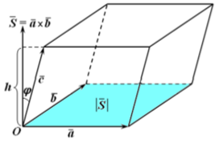

Тема заняття. Мішаний добуток трьох векторів
Мішаним (векторно-скалярним) добутком векторів \(\vec{a}\), \(\vec{b}\) і \(\vec{c}\) називають число, яке дорівнює скалярному добутку векторів \(\left(\vec{a}\times\vec{b}\right)\) і \(\vec{c}\) , де \(\vec{a}\times\vec{b}\) – векторний добуток векторів \(\vec{a}\) і \(\vec{b}\).
Мішаний добуток векторів \(\vec{a}\) , \(\vec{b}\) і \(\vec{c}\) позначається символом \(\left(\vec{a},\vec{b},\vec{c}\right)\). Отже, згідно з означенням \(\left(\vec{a},\vec{b},\vec{c}\right)=\left(\vec{a}×\vec{b},\vec{c}\right)\).
Геометричний зміст мішаного добутку. Мішаний добуток векторів за абсолютною величиною дорівнює об’єму паралелепіпеда, побудованого на векторах \(\vec{a}\) , \(\vec{b}\) і \(\vec{c}\), як на ребрах (рис.1).
рис.1
Вираження мішаного добутку через координати перемножуваних векторів
Нехай \(\vec{a}\left(a_x;a_y;a_z\right)\), \(\vec{b}\left(b_x;b_y;b_z\right)\) і \(\vec{c}\left(c_x;c_y;c_z\right)\). Тоді,
\(\left(\vec{a},\vec{b},\vec{c}\right)=\left|\begin{matrix}\vec{a_x}&\vec{a_y}&\vec{a_z}\\\vec{b_x}&\vec{b_y}&\vec{b_z}\\\vec{c_x}&\vec{c_y}&\vec{c_z}\\\end{matrix}\right|\).
Приклад 1. Обчислити мішаний добуток векторів \(\vec{a}\left(2;1;1\right)\), \(\vec{b}\left(2;3;2\right)\), \(\vec{c}\left(3;4;4\right)\).
\(\left(\vec{a},\vec{b},\vec{c}\right)=\left|\begin{matrix}2&1&1\\2&3&2\\3&4&4\\\end{matrix}\right|=24+6+8-9-16-8=30-1-24=5\).
Застосування мішаного добутку
З геометричного тлумачення мішаного добутку векторів випливають такі залежності:
- Умова компланарності трьох векторів
Якщо вектори \(\vec{a}\), \(\vec{b}\) і \(\vec{c}\) компланарні, то \(\left(\vec{a},\vec{b},\vec{c}\right)=0\), тобто
\(\left|\begin{matrix}\vec{a_x}&\vec{a_y}&\vec{a_z}\\\vec{b_x}&\vec{b_y}&\vec{b_z}\\\vec{c_x}&\vec{c_y}&\vec{c_z}\\\end{matrix}\right|=0\). (1)
- Чотири точки \(A\left(x_1;y_1;z_1\right)\), \(B\left(x_2;y_2;z_2\right)\), \(C\left(x_3;y_3;z_3\right)\), \(D\left(x_4;y_4;z_4\right)\) лежать в одній площині.
Шукана умова рівносильна умові компланарності векторів \(\vec{AB}\), \(\vec{AC}\) та \(\vec{AD}\), а отже, згідно з формулою (1) набуває вигляду
\(\left|\begin{matrix}x_2-x_1&y_2-y_1&z_2-z_1\\x_3-x_1&y_3-y_1&z_3-z_1\\x_4-x_1&y_4-y_1&z_4-z_1\\\end{matrix}\right|=0\).
- Об’єм тетраедра (трикутної піраміди).
Об’єм трикутної піраміди ABCD становить одну шосту об’єму паралелепіпеда, побудованого на векторах \(\vec{AB}\), \(\vec{AC}\) та \(\vec{AD}\), тобто
\(V_{пір}=\frac{1}{6}|\left(\vec{АВ},\vec{АC},\vec{АD}\right)|\).
Приклад 2. Перевірити, чи точки A(1;2;-1), B(0;1;5), C(-1;2;1), D(2;1;3) лежать в одній площині.
Знайдемо координати векторів: \(\vec{АВ}\left(0-1;1-2;5-\left(-1\right)\right)\), \(\vec{АВ}\left(-1;-1;6\right)\)
\(\vec{АC}\left(-1-1;2-2;1-\left(-1\right)\right)\), \(\vec{АC}\left(-2;0;2\right)\)
\(\vec{АD}\left(2-1;1-2;3-\left(-1\right)\right)\), \(\vec{АD}\left(1;-1;4\right)\).
Знайдемо мішаний добуток цих векторів:
\(\left(\vec{AB},\vec{AC},\vec{AD}\right)=\left|\begin{matrix}-1&-1&6\\-2&0&2\\1&-1&4\\\end{matrix}\right|=-2+12-2-8=0\).
Згідно з умовою компланарності вектори \(\vec{АВ},\vec{АC},\vec{АD}\) є компланарними, тоді точки А, В, С і D лежать в одній площині.
Приклад 3. Задані координати вершин піраміди A(4;-2;3), B(5;-3;1), C(-4;7;1), D(-1;7;5).
Знайти:
- довжину ребра ВС;
- косинус кута між ребрами ВС і ВD;
- площу граней АВС;
- висоту грані АВС, яка проведена з вершини А;
- об`єм трикутної піраміди з вершинами у точках A,B,C,D;
- висоту трикутної піраміди, яка проведена з вершини С на грань ABD.
Розв`язок.
1) довжину ребра ВС знайдемо як відстань між цими точками
\(ВС=\sqrt{\left(х_С-х_В\right)^2+\left(y_С-y_В\right)^2+\left(z_С-z_В\right)^2}\)
\(ВС=\sqrt{\left(-4-5\right)^2+\left(7+3\right)^2+\left(1-1\right)^2}=\sqrt{-9^2+10^2+0^2}=\sqrt{81+100}≈13,45\)
2) косинус кута між ребрами ВС і ВD – це все одно, що косинус кута між такими за назвою векторами.
\(cos{\left(\vec{BC}; \vec{BD}\right)}=\frac{\vec{BC}\cdot\vec{BD}}{\left|\vec{BC}\right|\cdot\left|\vec{BD}\right|}\)
\(\vec{BC}\left(-4-5;7-\left(-3\right);1-1\right)\), \(\vec{BC}\left(-9;10;0\right)\)
\(\vec{BD}\left(-1-5;7-\left(-3\right);5-1\right)\), \(\vec{BD}\left(-6;10;4\right)\)
\(\vec{BC}\cdot\vec{BD}=\left(-9\right)\cdot\left(-6\right)+10\cdot10+0\cdot4=154\)
\(\left|\vec{BC}\right|=\sqrt{\left(-9\right)^2+10^2+0^2}=\sqrt{181}\)
\(\left|\vec{BD}\right|=\sqrt{\left(-6\right)^2+10^2+4^2}=\sqrt{152}\)
\(cos{\left(\vec{BC};\vec{BD}\right)}=\frac{154}{\sqrt{181}\cdot\sqrt{152}}=\frac{154}{\sqrt{27512}}\approx0,9285\)
3) Знайдемо координати векторів \(\vec{AB}\left(5-4;-3-\left(-2\right);1-3\right)\), \(\vec{AB}\left(1;-1;-2\right)\) та
\(\vec{AC}\left(-4-4;7-\left(-2\right);1-3\right)\), \(\vec{AC}\left(-8;9;-2\right)\).
\(\vec{AB}\times\vec{AC}=\left|\begin{matrix}\vec{i}&\vec{j}&\vec{k}\\1&-1&-2\\-8&9&-2\\\end{matrix}\right|=\vec{i}\cdot\left(2+18\right)-\vec{j}\cdot\left(-2-16\right)+\vec{k}\cdot\left(9-8\right)=20\vec{i}+18\vec{j}+\vec{k}\), а потім площу грані АВС
\(S_{ABC}=\frac{1}{2}\left|\vec{AB}\times\vec{AC}\right|=\frac{1}{2}\sqrt{20^2+18^2+1^2}=\frac{1}{2}\sqrt{400+324+1}=\frac{1}{2}\sqrt{725}\approx13,46\)
4) висоту грані АВС, яка проведена з вершини А, позначимо \(AN=\frac{2S_{ABC}}{BC}\). Площу грані АВС берем у пункті 3, довжину ребра ВС – у пункті 1.
\(AN=\frac{\sqrt{725}}{\sqrt{181}}=\sqrt{\frac{725}{181}}\approx2\)
5) об`єм трикутної піраміди з вершинами у точках A,B,C,D знаходимо за формулою \(V_{пір}=\frac{1}{6}|\left(\vec{АВ},\vec{АC},\vec{АD}\right)|\).
Знайдемо координати вектора \(\vec{AD}\left(-1-4;7-\left(-2\right);5-3\right)\), \(\vec{AD}\left(-5;9;2\right)\).
Знайдемо мішаний добуток векторів
\(\left(\vec{AB},\vec{AC},\vec{AD}\right)=\left|\begin{matrix}1&-1&-2\\-8&9&-2\\-5&9&2\\\end{matrix}\right|=1\cdot\left(18+18\right)+1\cdot\left(-16-10\right)-2\cdot\left(-72+45\right)=64\).
\(V=\frac{1}{6}\left|\left(\vec{AB},\vec{AC},\vec{AD}\right)\right|=\frac{1}{6}\cdot64=\frac{32}{3}=10\frac{2}{3}\).
6) Об’єм піраміди знаходиться за формулою \(V=\frac{1}{3}S_o\cdot H\), де основою піраміди (за умовою задачі) є грань ABD. Значить, для знаходження висоти піраміди, проведеної з вершини С на грань ABD, формула буде мати вид \(H=\frac{3V}{S_{ABD}}\).
Знайдемо площу грані ABD
\(\vec{AB}\times \vec{AD}=\left|\begin{matrix}\vec{i}&\vec{j}&\vec{k}\\1&-1&-2\\-5&9&2\\\end{matrix}\right|=\vec{i}\cdot\left(-2+18\right)-\vec{j}\cdot\left(2-10\right)+\vec{k}\cdot\left(9-5\right)=16\vec{i}+8\vec{j}+4\vec{k}\)
\(S_{ABD}=\frac{1}{2}\left|\vec{AB}\times\vec{AD}\right|=\frac{1}{2}\sqrt{16^2+8^2+4^2}=\frac{1}{2}\sqrt{256+64+16}=\frac{1}{2}\sqrt{336}\approx9,2\).
Знайдемо висоту \(H\approx\frac{3\cdot\frac{32}{3}}{9,2}\approx3,49\).